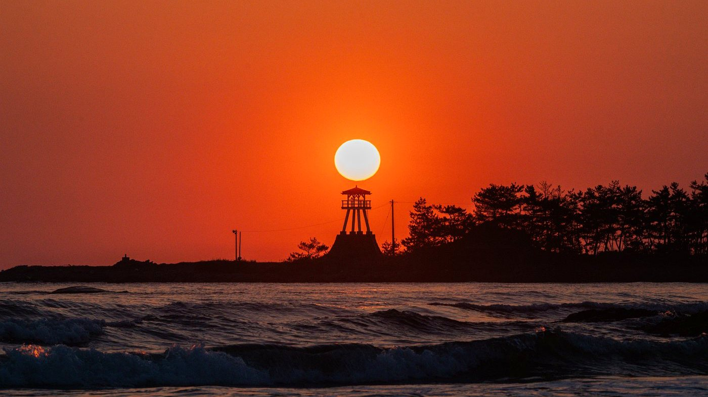

志賀エリア
弁天島べんてんじま
夕日に照らされて幻想的に描かれる、美しい自然のシルエット
安部屋漁港の沖に浮かぶ小さな島で、夕陽の絶景スポットとして知られています。かつて北前船が寄港した安部屋港を守る天然の防波堤の役割を果たしていたことから、「三味線島」とも呼ばれています。
島へは陸続きで歩いて渡ることができ、樹齢約50年の松が約200本立ち並ぶ静かな松林の奥には、伊都久志麻神社がひっそりと佇みます。祀られている市杵島姫命は弁才天と同一視されることもあり、海の安全と豊漁を願う漁師たちの守り神として信仰されてきました。
島の先端には白い木造灯台が立ち、夕暮れ時には空と海と島が織りなす幻想的なシルエットが広がります。冬の厳寒期には、海越しに白山を遠望できることもあります。
PHOTOS
全19枚
弁天島の写真
写真をクリックすると拡大表示します。